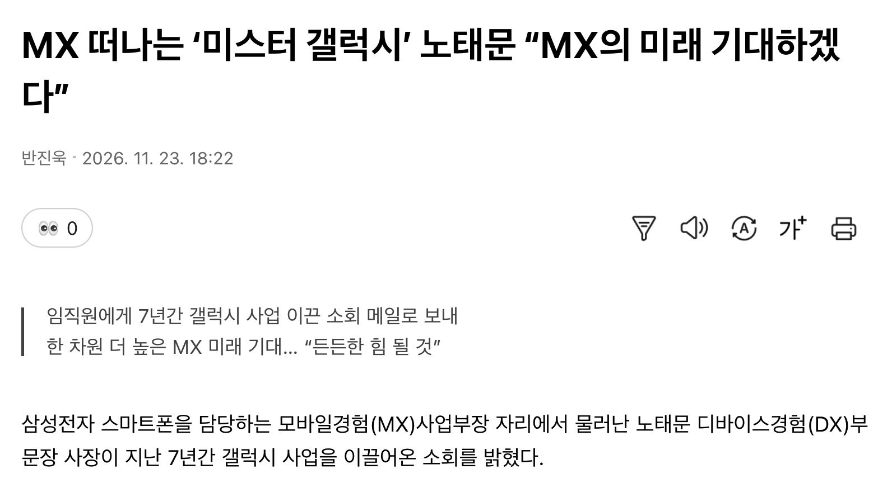

그가 드디어 MX를 떠나는구나...

그가 드디어 MX를 떠나는구나...
여전히 DX부문장으로는 남아있음
펌프 ㄷㄷ
몇백억은 벌었겠지?
노태문 없으면 더 개판날거같은데 ㅋㅋ
알고보니 억제기 아니였나
차차기작에 반영될라나?? 후기작품보면 알수잇을듯 ㅋㅋ
Dx밑에 mx있는거라 의미가있는건지는몰?루?
MX랑 DX랑 따로야.
DX는 가전쪽이고 MX는 모바일만 전문으로함.
스마트폰, 태블릿, 관련 액세서리까지가 MX.
DX부문 아래에 MX가 맞음
DX부문아래에 모바일 담당 MX, 가전 담당하는 DA랑 VD등이 있는거임
Dx 밑에 mx vd nw da sr 이 있는거야
Dx부문밑에 사업부가 있고 mx가 모바일
ㄴㄴ 가전쪽은 DA고, MX랑 DA랑 둘다 DX 산하가 맞음.
DX사단 아래 DA연대 MX연대 VD연대 등등이 있다고 보면 됨
아직도 재무쟁이가 설치고 다니나?
서초에 그양반은 당연히 잘 있겠지.
원가절감으로 욕먹었지만 그래도 선녀인사람인데
노태문이 선녀일텐데 ㅋㅋㅋㅋㅋㅋㅋ
다른 새끼들 보몀 노태문이 그나마 선녀라는거임
그나마 방파제 아니었나?
노태문이 그나마 공돌이 대변일텐데
긍정적 억제기였을지 부정적 억제기였을지는 뭐 까봐야지
노태문은 그렇게 욕먹을사람이 아니다에 승희 불알걸수있음
서초딩때문에 저스펙 하드웨어 원가절감 강요당하는 와중 하드웨어 부품공용화 소프트웨어 개선으로 최대한 커버친 사람이라 생각함
s27 가격 때문에 흉흉한 소문 있던데
노태문때 실적은 좋았지
이제 전임자 지우기 ㅇㅈㄹ 하면서 쓸대없는 자원낭비할예정인가
웃기지 마라!! 제발좀가라!! 내앞에서 제발!! 그만좀 없어줘!!